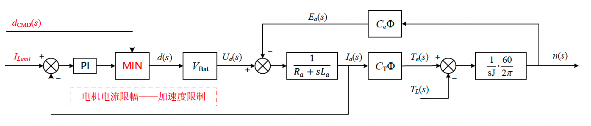
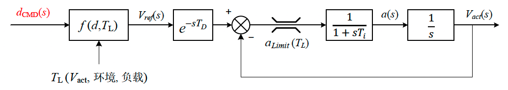

- 符号定义
$$ C_T、C_e\ -\ 电机转矩常数、电机电动势常数，与电机结构有关\n\ -\ 转速，单位rpm\I_a\ - 电枢电流;\ U_a - 电枢两端电压，即输入电压\R_a - 电枢线圈电阻;\ L_a\ -\ 电枢等效电感\J\ - 转动惯量;\ T_e\ - 电磁转矩;\ T_L\ - 负载转矩（含损耗）
$$
- 电磁转矩
$$ T_e=C_T{\Phi}I_a
$$
- 电枢反电动势
$$ E_a=C_e\Phi n
$$
- 转速稳态：
$$ n=\frac{U_a-I_aR_a}{C_e\Phi}
$$
- 转速动态：
$$ \frac{dn}{dt}=\frac{d\Omega}{dt}\cdot\frac{60}{2\pi}=\frac{T_e-T_L}{J}\cdot\frac{60}{2\pi}
$$
- 电枢电流稳态：
$$ I_a=\frac{T_L}{C_T\Phi}
$$
- 电枢电流动态：
$$ \frac{dI_a}{dt}=\frac{U_a-E_a-I_aR_a}{L_a}
$$
系统建模框图
- 根据上述公式，可以总结为如下的系统框图

总结
稳态值：
- 电流稳态值取决于负载转矩TL
- 转速稳态值主要取决于电枢电压，也就是占空比，其次随着负载增大，电枢压降会略微增加，导致速度下降。
动态情况
电流到转速是明确的一阶系统
- 时间常数相关参数：电机结构、转动惯量
电压到电流可近似为一阶系统
时间常数相关参数：电枢电感
$$ \frac{I_a(s)}{U_a(s)}=\frac{s}{s^2L_a+sR_a+K}\K=C_TC_e{\Phi}^2\cdot\frac{60}{2\pi\cdot J} $$
（感觉了一下K应该比较小，最好有参数验证想法），在较高频率，可近似认为
$$ \frac{I_a(s)}{U_a(s)}\approx\frac{1}{sL_a+R_a} $$
对于车辆
- 稳态速度 -- 近似正比于输入占空比
- 加速度 -- 电枢电流
- 还有一点需要注意：
- 电机转速和车轮等效转速相同，车辆速度达到车轮速度有一个惯性过程，若轮胎刚度够大，该惯性环节的延时可忽略。
目前的速度闭环控制

明诺底盘模型深入
我最近仔细看了下数据，内部似乎是有一个电流环限幅（实现方式为硬件或软件未知），但是未得到供应商的证实。考虑到电流限幅的影响，电机模型应该是这样的：

对应车辆，等价于有一个加速度的限幅
明诺底盘模型简化
以上模型看起来比较复杂，（仅对于动态过程，电流环限幅生效时）可以进一步简化结构为下图所示：

对于稳态，电流环限幅不生效时，则应该依然使用之前的模型，考虑小信号动态（为简化分析，这里忽略了负载转矩随输出变化）可简化为如图所示的小信号模型，该模型可用于闭环稳定性分析。
$$ G{iu}(s)=\frac{\hat{i_a}(s)}{\hat{u_a}(s)}=\frac{s}{s^2L_a+sR_a+K}\ G{ni}(s)=\frac{\hat{n}(s)}{\hat{ia}(s)}=C_T{\Phi}\cdot\frac{60}{2\pi\cdot sJ}\ G{nu}(s)=\frac{\hat{n}(s)}{\hat{ua}(s)}=G{iu}(s)G_{ni}(s)=\frac{K}{s^2L_a+sR_a+K}\cdot \frac{1}{C_e\Phi}\ K=C_TC_e{\Phi}^2\cdot\frac{60}{2\pi\cdot J}
$$
明诺底盘参数估算
找供应商拿不到参数，只好自己估算了，以3月测试工况作为参考
根据稳态电流，1m/s时为16A，2m/s时为19A，可估计负载力矩与车辆速度v有如下关系：
$$ T_L=(13+3v)\cdot C_T\Phi\tag{1}
$$ 根据加速度的情况，0.5m/s附近约为0.65m/s2，1.5m/s附近约为0.55m/s2，可估计最大加速度和车速有如下关系：
$$ a_{Limit}=0.64-0.06v\tag{2}
$$ 根据明诺车辆的齿轮比和轮周长
$$ a=\frac{dv}{dt}=\frac{1}{60\cdot11.1}\cdot0.9425\cdot\frac{dn}{dt}=0.00141516\frac{dn}{dt}\tag3
$$ 根据电机模型有
$$ a{Limit}(T_L)=(I{max}-\frac{T_L}{C_T\Phi})\cdot C_T\Phi\cdot\frac{1}{J}\cdot\frac{60}{2\pi}\cdot0.00141516\tag4
$$ 而电机电流内环限幅 Imax ≈ 45A，对比(1)(2)可算得下式的Ka = 0.02
$$ a{Limit}(T_L)=(I{max}-\frac{T_L}{C_T\Phi})\cdot K_a
$$
$$ \frac{C_T\Phi}{J}=1.48
$$
电枢电压52V，对应转速1770转，以及考虑稳态电枢电阻压降估算得：
$$ C_e\Phi\approx0.025
$$ 电枢电阻，只能随便估计了，大约0.2Ω，电枢电感，根据电流波形，大概估计为
$$ L=0.08 H
$$ 电流上升时间约为0.2秒，若当成1阶系统，电流环的时间常数约为0.07秒；纯延时约为0.15秒，考虑到数字控制延时0.05秒，可以合并为0.2秒
$$ T_i=0.07\T_D=0.15
$$ 不考虑环境变化，1m/s对应占空比0.4，1.5m/s对应占空比0.55，2m/s对应占空比0.7，粗略估计占空比和稳态速度的关系如下
$$ V_{ref}=f(d)=(d-0.05)*3
$$ 根据以上参数，可以估算出
$$ K=C_TC_e{\Phi}^2\cdot\frac{60}{2\pi\cdot J}=0.353 $$